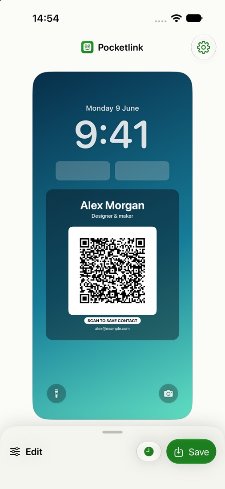
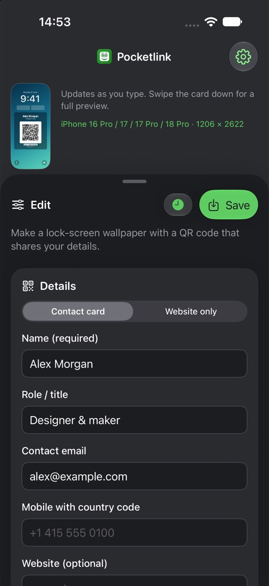
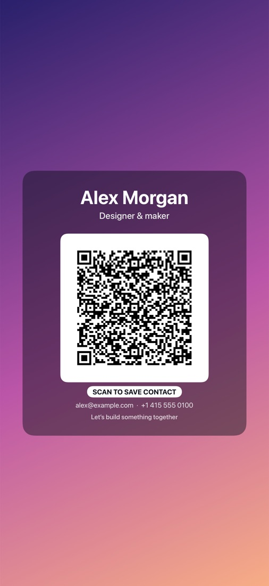
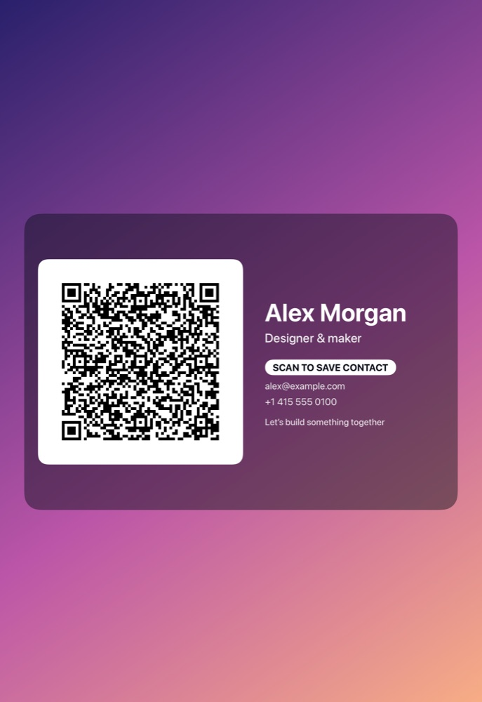

QR code wallpaper for iPhone
Your contact card, on your Lock Screen.
Pocketlink turns your details into a wallpaper with a QR code. People point their camera at your phone to save your contact or open your link — no app, no typing, no business cards.
Free. Every feature. Requires iOS 27.


Everything you need to make the introduction
-
A contact card or a link
Share your name, role, email, phone and website as a contact card people save in one tap. Or share a single link: your LinkedIn profile, your Linktree, your portfolio.
-
Sized for your iPhone
Wallpapers are made at your display’s native resolution, so nothing is cropped or scaled. Pocketlink recognises your iPhone, from iPhone SE to iPhone 18 Pro Max and the iPhone Duo outer display.
-
Your look
Pick one of 14 gradients, a colour of your own with beams, rays or glass, or your own photo — zoom, crop and darken it so the card stays readable. A live preview shows where the clock and widgets will sit.
-
Private by design
No account, ads, analytics or server. Your details and background stay on your iPhone, excluded from backup. The code shares only what you type.
-
Works with Apple Wallet
Keep your code in Wallet too. Save your wallpaper, then use Wallet’s Create a Pass to turn it into a pass with your name, icon and colour.
-
Free, every feature
No subscription, no purchase, no watermark. Make as many wallpapers as you like for every occasion.
Three steps to your next hello
-
Add your details
Only your name is required. Add a role, email, phone, website or a tagline.
-
Pick your background
Choose a gradient, a colour or a photo and move the card clear of the clock.
-
Save and set it
Save to Photos, then set it as your Lock Screen in Settings › Wallpaper.
Made for every screen, including iPhone Duo
On the iPhone Duo outer display, the code sits beside the clock and your details run alongside it.


Questions about Pocketlink
Is Pocketlink free?
Yes. Every feature is free, with no subscription, no purchase and no watermark. Make as many wallpapers as you like.
What happens when someone scans the code?
They point their iPhone camera at your Lock Screen. A contact card code offers to save your details. A website-only code opens your link, such as your LinkedIn profile or Linktree page. They don’t need Pocketlink.
Does the QR code work on the Lock Screen?
Yes. Show it from the Lock Screen, where app icons can’t cover it, keep Lock Screen widgets clear of the code, and turn the brightness up when someone scans it.
Can I add my contact card to Apple Wallet?
Yes, with Wallet’s own Create a Pass, which needs iOS 27 on an iPhone with Apple Intelligence. Save your wallpaper in Pocketlink, then choose your saved wallpaper in Wallet’s Create a Pass.
Where are my details stored?
Only on your iPhone. Pocketlink has no account, ads, analytics or server, and your details are excluded from backup. Anyone who scans the code can read what it shares, so only include what you’re happy to give out.
More answers in the support page, or read how to put a QR code on your iPhone Lock Screen.